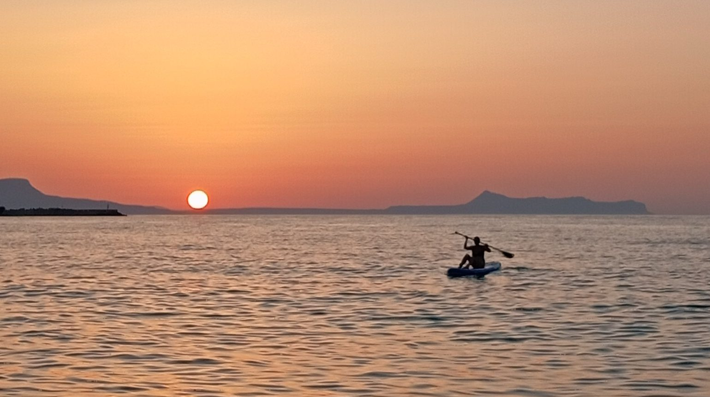

Interference-aware placement in Kubernetes
Resource management and dynamic pod placement that uses machine learning to predict and avoid interference between co-located workloads.
Stockholm / Athens
MSc student in Communication Systems at KTH Royal Institute of Technology, and former Research Assistant at NTUA. I work on edge-cloud orchestration, Kubernetes resource management and distributed LLM inference.

Experience & education
KTH Royal Institute of Technology · Stockholm
Specialization track in Internetworking, at the School of Electrical Engineering and Computer Science.
Network Management and Optimal Design Laboratory, NTUA · Athens
Designed orchestration and scheduling strategies that cut latency in resource-constrained edge and cloud environments. Benchmarked distributed LLM serving with vLLM and designed MLFQ scheduling algorithms to speed up inference.
National Technical University of Athens · Athens
Focus on telecommunication systems, computer networks, computer systems and software. Graduated with 9.1/10.
Publications
Selected work
Resource management and dynamic pod placement that uses machine learning to predict and avoid interference between co-located workloads.
Benchmarking vLLM deployments and designing multi-level feedback queue schedulers to reduce latency for LLM inference.
A peer-to-peer distributed file sharing system built on the Chord distributed hash table.
Won first place in a marketplace simulation, alongside software engineering projects with REST APIs and databases.
How I got here
I grew up in Athens and studied Electrical and Computer Engineering at NTUA, where I found my way into networks and distributed systems. My thesis on interference-aware scheduling in Kubernetes turned into my first paper, and into a year of research on edge-cloud orchestration and LLM inference.
Now I am in Stockholm for an MSc at KTH. My interests include optimization algorithms, analytical network modeling and quantum communications. Day to day I work with Python, Linux, Docker, Kubernetes, FRRouting and Prometheus.
Outside of research, I have practiced Tang Soo Do for over a decade, holding a 2nd Dan black belt and teaching beginner classes. I have guided visitors through ancient Greek technology at the Herakleidon Museum, written telemetry software for the Prometheus Eco-Racing team, and volunteered on forest fire patrols.
Say hello
Open to research collaborations, internships and good conversations about networks.